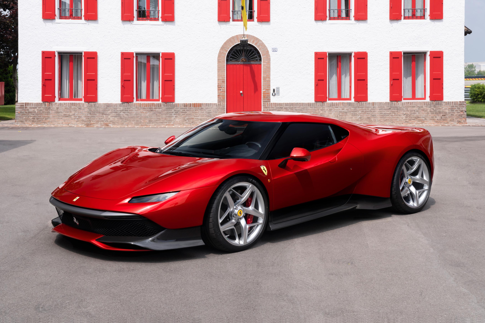

BMWX5
 More images
More imagesBMW X5 2014 BMW X5 (F15) xDrive30d wagon (2015-06-27) 01.jpg Overview Manufacturer BMW Production 1999–present Body and chassis Class Mid-size luxury SUV Body style 5-door SUV Layout Front-engine, four-wheel-drive Front-engine, rear-wheel-drive The BMW X5 is a mid-size luxury SUV produced by BMW. The first generation of the X5, with the chassis code E53, made its debut in 1999. It was BMW's first SUV and it also featured all-wheel drive and was available with either manual or automatic transmission. In 2006, the second generation X5 was launched, known internally as the E70, featuring the torque-split capable xDrive all-wheel drive system mated to an automatic transmission, and in 2009 the X5 M performance variant was released as a 2010 model
Ferrari |
|
|  More images |
Ferrari N.V. (Italian: [ferˈrari]) is an Italian luxury sports car manufacturer based in Maranello. Founded by Enzo Ferrari in 1939 out of Alfa Romeo's race division as Auto Avio Costruzioni, the company built its first car in 1940. However, the company's inception as an auto manufacturer is usually recognized in 1947, when the first Ferrari-badged car was completed. |